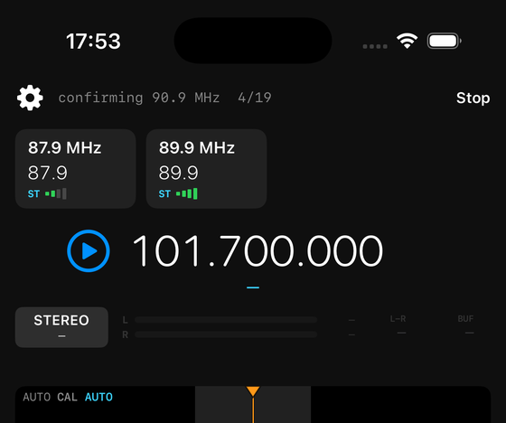
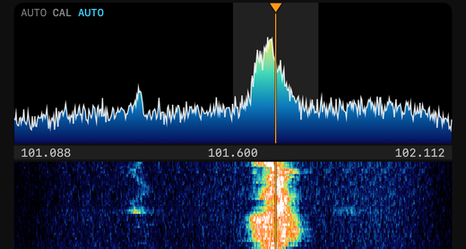

Radio
Used like a car radio: scan once, then tap whichever station you want. It is also the quickest way to check that everything works.

The first time: scan
- It starts emptyThe first time you open the Radio page the station list has nothing in it and says No stations yet. Tap Scan at the top right.

- First a sweep of the whole bandThe top left shows progress such as
sweeping 2/50: the app is looking across the FM broadcast band, a piece at a time, for every frequency that might hold a station. The button becomes Stop, which ends the scan at any moment.
- Then each one is confirmedProgress becomes
confirming 90.9 MHz 4/19: the app demodulates every candidate and listens, and only a real broadcast goes into the list. So there are no entries that turn out to be silence. Each one confirmed appears in the list at once.
- Done: tap a stationWhen the button reads Rescan the scan is over. All of it takes half a minute to a minute, depending on the sample rate. The list scrolls sideways; one tap plays a station.

In another city, or after changing the antenna, tap Rescan.
What is on the page

The stations found; swipe sideways for more. ST marks a stereo station, MONO a mono one, and the small bars are signal strength. Tap to play, touch and hold to rename.
The large figures are the current frequency, with the station's name beneath (its frequency when it has none). The round button on the left is play and stop.

The button on the left steps through AUTO / STEREO / MONO; the percentage is the separation actually achieved. With a weak, hissy signal, MONO is much cleaner. L and R are the two channels' levels, L−R is how much they differ (nearer 0 means more stereo), and BUF is how full the audio buffer is: steady around one value means the network is keeping up.

The signals around the current frequency: the spectrum now on top, and under it the waterfall scrolling down through time. Bright columns are stations, and the line in the middle is what you are listening to. AUTO and CAL at the top left set the waterfall's brightness: AUTO adjusts it by itself, CAL sets it once from the present noise floor.

‹ › move one step, « » ten steps; Step in the middle changes the step (100k for FM broadcast); drag the dial at the very bottom to tune continuously.
Naming a station
A station shows its frequency by default. Touch and hold a station card and choose Rename to give it a name. To go back, touch and hold and choose Use the original name.
Where stations broadcast RDS they send their own name and the app shows it. Where they do not — most of China, for one — you name them yourself.
It calibrates the receiver as you listen
Every few seconds spent on a stereo station, the app quietly measures the receiver's frequency error. After three or more stereo stations the correction applies itself, and signals that need an exact frequency — air traffic, APRS, AIS — are where they should be. See Frequency calibration.
Common situations
| What you see | Why, and what to do |
|---|---|
| No stations found, or one or two | The antenna is too short or badly placed. Extend each side to about 75 cm, put it by a window and scan again. |
| Some stations say MONO | Normal. News and talk stations often broadcast in mono. |
| A stereo station hisses | Stereo needs a stronger signal. Switch to MONO, or improve the antenna. |
| The radio keeps playing on another page | By design: audio carries on in the background. Stop it on the Radio page, or press play on another page that uses the same receiver and it gives way. |